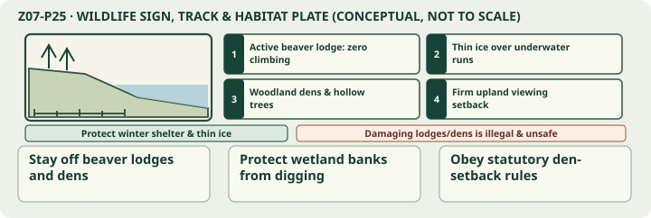

Z07-P25 · Traps and snares · New manuscript
Protecting Dens, Beaver Lodges, Wetlands and Sensitive Habitats
Respect legal and ecological protections surrounding active wildlife dens, beaver lodges, muskrat houses, and wetland buffers.
When it applies · Travel and outdoor education near wetlands, streams, and woodland dens.
Equipment · Land-status map, binoculars.

Actions
- Never climb on, poke into, or damage beaver lodges, muskrat houses, or woodland mammal dens—doing so harms overwintering wildlife and violates Minnesota wildlife protection statutes.[L01, L05, L13]
- Avoid digging pits, cutting live shoreline saplings, or disturbing fragile bog/fen edges where wetland restoration takes decades.[L13, R10]
- Observe aquatic mammals quietly from stable upland viewpoints so normal foraging and winter food-cache survival remain undisturbed.[L05, L13]
Failure recognition · Walking onto snow-covered beaver lodges risks breaking into freezing water tunnels and destroying essential winter animal shelter.[L05, L13, X03]
Verify · All dens, lodges, and wetland margins remain completely untouched and observed only from firm upland viewpoints.[L05, L13]
Stop or change course · Stop approaching whenever thin ice over beaver runs, active bank dens, or protected SNA boundaries are encountered.[L13, X03]
Evidence and editorial notes
- L01 · Minnesota DNR · Minnesota Trapping Regulations and Fur Harvest Rules (Current web edition)
- Section: Minnesota trapping licensing, seasons, and statutory limits · Conditions: Any regulated trapping activity or legal reference in Minnesota
Support: Trapping is strictly regulated by license, season, species, trap type, set location, check intervals, and landowner permission; unauthorized trapping is illegal.
Limitations: Emergency narratives never create an exemption to set traps or snares; verify current statute and DNR handbook every season. · Conflicting evidence: None noted.
Editorial note: Primary Z07 legal boundary. · Specialist reviewer: Wildlife law and DNR enforcement reviewer
Primary source · checked 2026-11-25 - L05 · Minnesota DNR · Nongame Wildlife Program and Protected Species (Current web edition)
- Section: Nongame wildlife protection and ecological role · Conditions: Non-harvested wildlife across forests, wetlands, and prairies
Support: Most wild mammals, songbirds, raptors, and reptiles are legally protected nongame species that may not be captured or killed.
Limitations: Ecological stewardship prioritizes observation and avoidance over capture. · Conflicting evidence: None noted.
Editorial note: Frames Z07 ecological ethics. · Specialist reviewer: Nongame wildlife biologist
Primary source · checked 2026-11-25 - L13 · Minnesota DNR · Scientific and Natural Areas Visitor Rules and Prohibitions (Current web edition)
- Section: Zero-disturbance scientific preserve ethics · Conditions: Sensitive habitats, wetlands, and rare-species corridors
Support: Natural-area conservation prohibits altering vegetation, digging pits, or leaving wire/cordage debris that entangles wildlife indefinitely.
Limitations: Abandoned wire or monofilament creates persistent ghost-entanglement hazards. · Conflicting evidence: None noted.
Editorial note: Addresses ghost-gear and environmental restriction. · Specialist reviewer: Conservation ecologist
Primary source · checked 2026-11-25 - R10 · Minnesota DNR · Scientific and Natural Areas Visitor Rules and Prohibitions (Current web edition)
- Section: No collecting plants, animals, rocks or fossils; Foraging · Conditions: Minnesota Scientific and Natural Areas, subject to the actual site rules
Support: Leave natural features in place unless the site lists an applicable exception or there is a valid authorization.
Limitations: Certain named sites have limited berry or mushroom exceptions. They do not extend to rocks or general digging. · Conflicting evidence: Conditions are recorded in the A03 audit.
Editorial note: Enforces SNA zero-collection boundaries. · Specialist reviewer: Minnesota DNR SNA manager
Primary source · checked 2026-11-25 - X03 · NWS · Cold Water Hazards and Safety (current web edition)
- Section: Cold Water Hazards > 1-10-1 Principle and Survival Actions · Conditions: Unexpected immersion in cold lakes, rivers, coastal or marine waters
Support: Protect the airway, use flotation, get out safely if possible, and prioritize rescue. The 1-10-1 mnemonic is descriptive and does not establish deadlines or survival times.
Limitations: Exact individual survival minutes vary widely with body size, clothing, sea state and water temperature. · Conflicting evidence: None; aligns with MN-COLDW and USCG guidance.
Editorial note: Anchors cold-water immersion decision thresholds in Z12. · Specialist reviewer: Cold-water rescue and emergency medicine
Primary source · checked 2026-11-24
Source lineage · New manuscript (Z07 P18 environmental restrictions) · Classification · New manuscript.